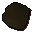

Hardleather body
| Config name | hardleather_body |
| Item id | 1131 |
| Value | 170 gp |
| Weight | 8lb |
| Members | No |
| Tradeable | Yes |
| Stackable | No |
| Equip slot | torso |
| Options | Wear |
| Category | armour_body |
| Defined in | scripts/skill_crafting/configs/leather/leather_gear.obj |
| Equipment stats | Magic att -4, Range att 8, Stab def 12, Slash def 15, Crush def 18, Magic def 6, Range def 15 |
Hardleather body
Harder than normal leather.
How to make
| Skill | Level | XP | Ingredients | Tool | How | Where | Makes |
|---|---|---|---|---|---|---|---|
| Crafting | 28 | 35.0 |  Hard leather, | use on item | 1 |
Dropped by
| NPC | Level | Quantity | Rarity | Via | Notes |
|---|---|---|---|---|---|
| 28 | 1 | 1/64 (1.56%) | |||
| 28 | 1 | 1/64 (1.56%) |
Sold at
| Shop | Shopkeeper | Stock |
|---|---|---|
| Aaron's Archery Appendages. | 10 |
Referenced in scripts
scripts/drop tables/scripts/kalphite_worker.rs2scripts/levelrequire/scripts/tier10.rs2scripts/levelup/scripts/levelup_unlocks_crafting.rs2scripts/skill_crafting/scripts/leather/leather.rs2